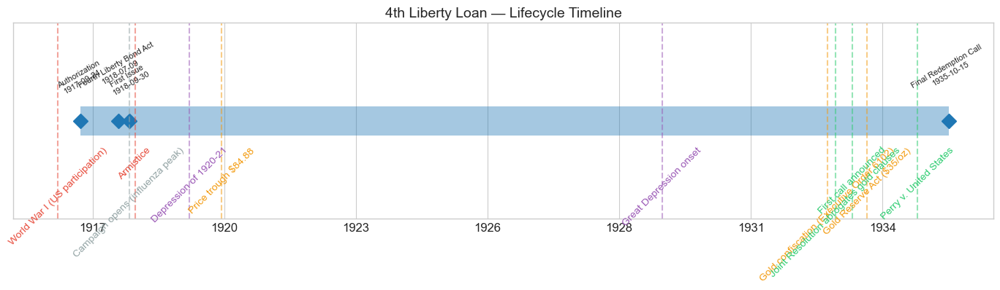
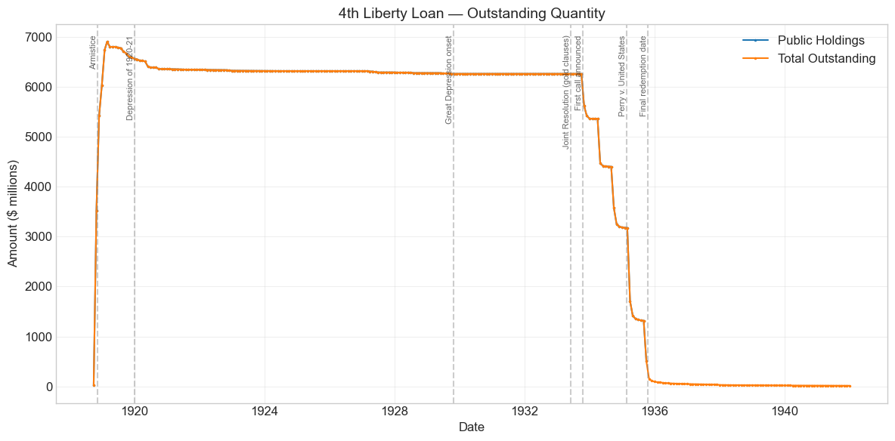
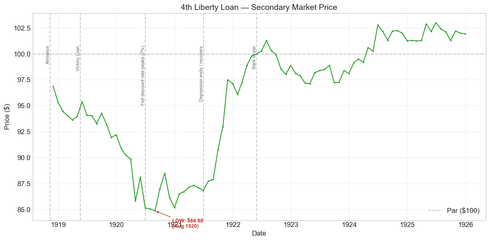
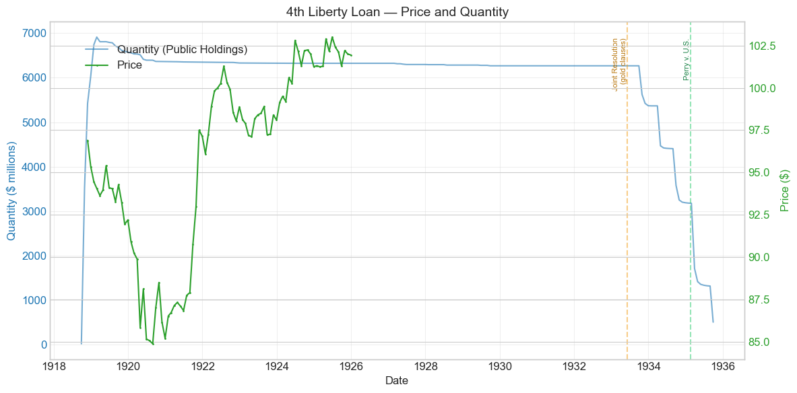
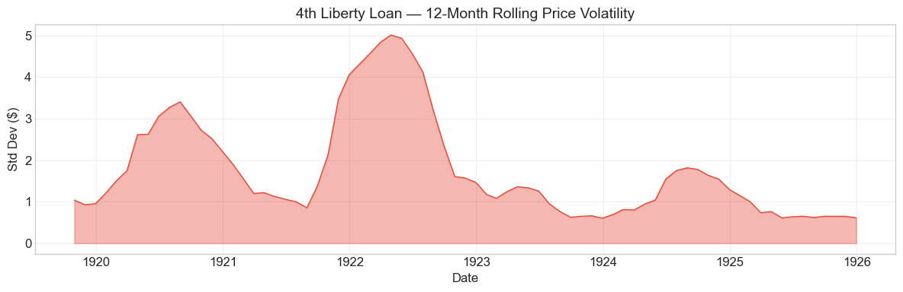

Bond Biography: 4th Liberty Loan#
An Enhanced Chapter from the Hall-Payne-Sargent US Federal Bond Database (2,857 issues, 1776–1960)
Bond ID (L1): 20169 Category: Interest Bearing > Marketable > Liberty Loan Coupon Rate: 4.25% First Issue Date: September 30, 1918 Term: 20 years — “gold bonds of 1933–38” (callable from October 15, 1933; payable October 15, 1938) Sold at Par: $100
“Having this power to authorize the issue of definite obligations for the payment of money borrowed, the Congress has not been vested with authority to alter or destroy those obligations.” – Chief Justice Charles Evans Hughes, Perry v. United States, 294 U.S. 330 (1935) — a case about this bond
import pandas as pd
import numpy as np
import matplotlib.pyplot as plt
import matplotlib.patches as mpatches
import datetime
import warnings
warnings.filterwarnings('ignore')
plt.style.use('seaborn-v0_8-whitegrid')
plt.rcParams.update({'figure.figsize': (12, 6), 'font.size': 12,
'axes.titlesize': 14, 'axes.labelsize': 12})
# Load the bond database
store = pd.HDFStore('../data/BondDF.h5', mode='r')
BondList = store['BondList']
BondQuant = store['BondQuant']
BondPrice = store['BondPrice']
store.close()
BondQuant_T = BondQuant.transpose()
BondPrice_T = BondPrice.transpose()
bond_id = 20169
print(f'Loaded data for: 4th Liberty Loan (ID: 20169)')
/Users/thomassargent/anaconda3/lib/python3.9/site-packages/pandas/core/arrays/masked.py:60: UserWarning: Pandas requires version '1.3.6' or newer of 'bottleneck' (version '1.3.5' currently installed).
from pandas.core import (
Loaded data for: 4th Liberty Loan (ID: 20169)
Overview#
The 4th Liberty Loan was authorized under the Second Liberty Bond Act as amended by the Fourth Liberty Bond Act of July 9, 1918 (40 Stat. 844). It was first issued on September 30, 1918 with a coupon rate of 4.25%. During its lifetime on the secondary market, the bond’s average price was \(95.82, ranging from \)84.88 to \(103.0 (based on 86 monthly observations from 1918-11-30 to 1925-12-31). Peak outstanding reached **\)6.91 billion** on 1919-02-28 — making the Fourth Liberty Loan the largest single security issue of the First World War, and the largest in American history to that date.
The Fourth was the culmination of the war-finance machine described in the 1st Liberty Loan and 2nd Liberty Loan chapters. By September 1918 Secretary of the Treasury William Gibbs McAdoo commanded a nationwide apparatus of Liberty Loan committees, Four-Minute Men, celebrity rallies, payroll-deduction plans, and the twelve Federal Reserve Banks as distribution hubs. The Fourth Loan campaign, which ran from September 28 to October 19, 1918, pushed that apparatus to its limit: roughly 22.8 million subscribers — on the order of one American in five — pledged about **\(6.96 billion** against a \)6 billion offering, and the Treasury accepted essentially the whole subscription. The database confirms the scale: public holdings climbed to $6.91 billion by February 1919 as installment payments came in. No prior loan in the nation’s history — and none again until the Second World War — mobilized so many creditors at once.
The campaign’s circumstances were extraordinary even by wartime standards. It coincided almost exactly with the deadliest weeks of the 1918 influenza pandemic: in October 1918, the pandemic’s worst month in the United States, many cities banned the very public gatherings — parades, rallies, theater appeals — on which Liberty Loan salesmanship depended, and the canvass had to be carried on door-to-door and through the press. And the timing had a second irony: the subscription books closed on October 19, 1918, and the Armistice followed on November 11 — barely three weeks later. The largest war loan in American history was subscribed in the war’s final days, and virtually all of the money was spent on demobilization, settlement of contracts, and continuing loans to the Allies rather than on combat.
What makes the Fourth Liberty Loan’s story unique in the broader arc of U.S. fiscal history, however, is not how it began but how it ended. These were gold bonds: each certificate promised payment of principal and interest “in United States gold coin of the present standard of value.” In 1933–35 that promise was put to the test. The Treasury called the Fourths for early redemption; Congress, by the Joint Resolution of June 5, 1933, declared gold clauses in all obligations — including the government’s own — against public policy; the dollar was devalued from \(20.67 to \)35 per ounce of gold; and a bondholder sued. The resulting Supreme Court decision, Perry v. United States (1935), is the single most important legal ruling ever issued about a bond in this database: the Court held that Congress had exceeded its constitutional power in abrogating the gold clause on federal bonds — and then denied the bondholder any damages. A right without a remedy. For a database built to measure what a government’s promises are worth, no bond poses the question more starkly than this one.
Historical Context#
The following major events occurred during this bond’s lifetime:
Date |
Event |
Category |
|---|---|---|
1917-04-06 to 1918-11-11 |
World War I (US participation) |
War |
1918-07-09 |
Fourth Liberty Bond Act (40 Stat. 844) |
Legislation |
1918-09/10 |
Influenza pandemic’s deadliest wave in the U.S. |
Crisis |
1918-09-28 to 1918-10-19 |
Fourth Liberty Loan campaign |
Fiscal |
1918-11-11 |
Armistice |
War |
1920-01-01 to 1921-07-01 |
Depression of 1920–21 |
Crisis |
1929-10-29 to 1933-03-01 |
Great Depression onset |
Crisis |
1933-04-05 |
Gold confiscation (Executive Order 6102) |
Monetary |
1933-06-05 |
Joint Resolution abrogating gold clauses (48 Stat. 112) |
Legislation |
1933-10 to 1935-10 |
Fourth Liberty Loan called and refunded |
Fiscal |
1934-01-30 |
Gold Reserve Act; dollar devalued to $35/oz |
Monetary |
1935-02-18 |
Perry v. United States decided |
Legal |
The War: Subscribed in the Final Weeks#
The Fourth Loan was a war loan that barely overlapped the war. Sold from late September to October 19, 1918, while the American Expeditionary Forces were fighting the Meuse-Argonne offensive, its books closed three weeks before the Armistice. Wartime conditions shaped its sale — patriotic demand at par, Federal Reserve support of money rates, and a campaign conducted under the shadow of the influenza epidemic — but its market life was almost entirely a peacetime affair. The first price observation in the database, $96.90 in November 1918, is already an Armistice-month quote, and already below par: with the patriotic campaign over, a 4.25% coupon met the market’s unsentimental judgment.
The Depression of 1920–21#
Like every Liberty issue, the Fourth was hammered by the postwar rate cycle. Inflation ran near 15% in 1919; once freed from supporting Treasury financing, the Federal Reserve raised the New York discount rate to 7% by June 1920. Long-term yields followed, and the Fourth 4.25s sank steadily from the mid-90s in 1919 to their lifetime low of **\(84.88 in August 1920**. A subscriber of October 1918 who had to sell in the summer of 1920 lost about 15 cents on the dollar. The deflationary collapse of 1920--21 then reversed the move: as prices and rates fell, the bond rallied powerfully — from the mid-80s in mid-1921 back to **par by May 1922** — and spent the mid-1920s above 100, peaking at \)103.00 in June 1925, where the price series ends.
The Great Depression and the Gold-Clause Endgame#
The database’s price series for this bond stops in December 1925, so the drama of 1933–35 must be read in the quantity series — where it is unmistakable. About $6.27 billion of Fourths remained outstanding, essentially unchanged, from 1929 through September 1933. Then, in six steps between October 1933 and October 1935, the entire issue was called, exchanged into new Treasury bonds, or paid off. Behind those steps lay the collapse of the gold standard: Roosevelt’s suspension of gold payments and Executive Order 6102 (April 1933), the Joint Resolution of June 5, 1933 nullifying gold clauses, the devaluation of January 1934, and the Supreme Court’s gold-clause decisions of February 1935. The full story is told in “The Endgame” section below.
# Bond Lifecycle Timeline
fig, ax = plt.subplots(figsize=(14, 4))
# Key dates
dates = [('Authorization', '1917-09-24'), ('Fourth Liberty Bond Act', '1918-07-09'), ('First Issue', '1918-09-30'), ('Final Redemption Call', '1935-10-15')]
events = [('World War I (US participation)', '1917-04-06', 'war'), ('Campaign opens (influenza peak)', '1918-09-28', 'other'), ('Armistice', '1918-11-11', 'war'), ('Depression of 1920-21', '1920-01-01', 'crisis'), ('Price trough $84.88', '1920-08-31', 'monetary'), ('Great Depression onset', '1929-10-29', 'crisis'), ('Gold confiscation (Executive Order 6102)', '1933-04-05', 'monetary'), ('Joint Resolution abrogates gold clauses', '1933-06-05', 'legislation'), ('First call announced', '1933-10-12', 'legislation'), ('Gold Reserve Act ($35/oz)', '1934-01-30', 'monetary'), ('Perry v. United States', '1935-02-18', 'legislation')]
import matplotlib.dates as mdates
from datetime import datetime
# Plot bond lifetime bar
d0 = datetime.strptime(dates[0][1], '%Y-%m-%d')
d1 = datetime.strptime(dates[-1][1], '%Y-%m-%d')
ax.barh(0, (d1 - d0).days, left=mdates.date2num(d0), height=0.3,
color='#1f77b4', alpha=0.4, label='Bond Lifetime')
# Mark key dates
for label, date_str in dates:
d = datetime.strptime(date_str, '%Y-%m-%d')
ax.plot(mdates.date2num(d), 0, 'D', color='#1f77b4', markersize=10)
ax.annotate(f'{label}\n{date_str}', (mdates.date2num(d), 0.25),
ha='center', va='bottom', fontsize=8, rotation=30)
# Mark historical events
colors = {'war': '#e74c3c', 'crisis': '#9b59b6', 'legislation': '#2ecc71', 'other': '#95a5a6', 'monetary': '#f39c12'}
for name, date_str, cat in events:
d = datetime.strptime(date_str, '%Y-%m-%d')
ax.axvline(mdates.date2num(d), color=colors.get(cat, 'gray'), alpha=0.5, linestyle='--')
ax.annotate(name, (mdates.date2num(d), -0.25), ha='center', va='top',
fontsize=10, rotation=45, color=colors.get(cat, 'gray'))
ax.set_yticks([])
ax.xaxis.set_major_formatter(mdates.DateFormatter('%Y'))
ax.set_title('4th Liberty Loan — Lifecycle Timeline')
ax.set_ylim(-1, 1)
plt.tight_layout()
plt.show()

Bond Features#
Feature |
Detail |
|---|---|
Name |
4th Liberty Loan |
Authorizing Act |
Second Liberty Bond Act (September 24, 1917), as amended by the Fourth Liberty Bond Act (July 9, 1918, 40 Stat. 844) |
First Issue Date |
September 30, 1918 (bonds dated October 24, 1918) |
Term |
20 years — “4¼% Gold Bonds of 1933–38” |
First Call Date |
October 15, 1933 (redeemable at the government’s option thereafter) |
Maturity |
October 15, 1938 |
Coupon Rate |
4.25% |
Payment Frequency |
Semi-annual (April 15 and October 15) |
Callable |
Yes |
Payable in Coin |
Yes — “in United States gold coin of the present standard of value” |
Price Sold |
Par (100) |
Offered |
$6.0 billion |
Subscribed |
~$6.96 billion |
Accepted |
~\(6.96 billion (database peak outstanding: \)6.91 billion) |
Subscribers |
~22.8 million — the most of any Liberty Loan |
Conversion Privilege |
No |
Tax Status |
Exempt from state and local taxes and the normal federal income tax; subject to surtaxes, with certain limited additional exemptions granted by the wartime acts |
Two design features deserve emphasis. First, the call window: “bonds of 1933–38” meant the Treasury could redeem at par any time after October 15, 1933 — an option that, exercised at the bottom of the interest-rate cycle in 1933–35, saved the taxpayer enormous sums and ended the bond’s life three to five years early. Second, the gold clause. Like all the Liberty Loans, the Fourth promised payment in gold coin of the 1918 standard ($20.67 per ounce). By historical accident it was a Fourth Liberty bond — not a First, Second, or Third — that became the test case when that promise was broken, which is why this otherwise-typical clause dominates this chapter.
# Display full bond features from database
row = BondList.loc[20169]
display_cols = [
"Treasury's Name Of Issue", 'Authorizing Act', 'Term Of Loan',
'First Issue Date', 'First Redemption Date', 'Final Redemption Date',
'Coupon Rate', 'Coupons Per Year', 'Callable', 'Coin',
'Authorized Amount', 'Price Sold'
]
print('Bond Features from Database:')
print('=' * 55)
for col in display_cols:
if col in row.index:
print(f' {col:<30} {row[col]}')
Bond Features from Database:
=======================================================
Treasury's Name Of Issue 4th Liberty Loan
Authorizing Act September 24, 1917
Term Of Loan 20 years
First Issue Date 1918-09-30 00:00:00
First Redemption Date NaT
Final Redemption Date NaT
Coupon Rate 4.25
Coupons Per Year 2.0
Callable 1.0
Coin 1.0
Authorized Amount nan
Price Sold 1.0
Bond Quantity Over Time#
The bond’s outstanding quantity peaked at $6.91 billion on 1919-02-28. Data spans from 1918-09-30 to 1935-09-30 for public holdings (205 monthly observations), with a residual “Total Outstanding” series of called-but-unredeemed bonds extending to 1941.
The shape of the series is a fiscal autobiography in three sentences. A nearly vertical ascent in the winter of 1918–19 as the 22.8 million subscribers paid their installments; a fifteen-year plateau — from roughly \(6.6 billion in 1919 drifting only gently down to \)6.27 billion by 1932, as small amounts were retired through sinking-fund and surplus purchases in the Mellon years; and then a staircase collapse between October 1933 and October 1935, as the Treasury called the whole issue and refunded it into new securities amid the gold-clause upheaval. Unlike the First and Second Loans, the Fourth had no conversion privilege, so its plateau is clean: what was issued in 1918 was still outstanding in 1932, held by (or inherited from) the largest body of creditors any American security had ever had.
# Bond quantity over time
fig, ax = plt.subplots(figsize=(12, 6))
for stype in ['Public Holdings', 'Total Outstanding']:
try:
s = BondQuant_T.loc[(20169, stype)]
s = s[s.notna()]
if len(s) > 0:
ax.plot(s.index, s.values / 1e6, marker='.', markersize=3, linewidth=1.5, label=stype)
except KeyError:
pass
ax.set_title('4th Liberty Loan — Outstanding Quantity')
ax.set_xlabel('Date')
ax.set_ylabel('Amount ($ millions)')
ax.legend()
ax.grid(True, alpha=0.3)
events = {'1918-11-11': 'Armistice', '1920-01-01': 'Depression of 1920-21', '1929-10-29': 'Great Depression onset', '1933-06-05': 'Joint Resolution (gold clauses)', '1933-10-12': 'First call announced', '1935-02-18': 'Perry v. United States', '1935-10-15': 'Final redemption date'}
for date_str, label in events.items():
d = pd.Timestamp(date_str)
ax.axvline(d, color='gray', alpha=0.4, linestyle='--')
ax.text(d, ax.get_ylim()[1]*0.97, label, rotation=90, va='top', ha='right', fontsize=8, alpha=0.7)
plt.tight_layout()
plt.show()

Quantity Analysis#
Three forces drove the quantity pattern:
1. Installment-driven issuance (September 1918 – February 1919). As with the earlier Liberty Loans, subscribers paid in stages — a schedule that ran from a 10% payment with application through final installments in January 1919. The database records only a small amount at the end of September 1918 (the campaign was still running), then an enormous jump in October–November as the first installments settled, reaching \(6.04 billion by December 1918 and the peak of **\)6.91 billion by February 1919**. The gigantic auto-detected “quantity increase” of October 1918 (+17,920%) is this settlement process, not a new borrowing decision — the loan was a single $6.9 billion subscription paid in over five months.
2. The long plateau (1919–1933). With no conversion privilege and a distant call date, the Fourths simply sat. The gentle erosion from \(6.57 billion (end-1919) to \)6.27 billion (end-1932) — about 5% over thirteen years — reflects the cumulative sinking fund and the Treasury’s surplus-era purchases under Secretary Mellon, which concentrated on shorter and more expensive debt (the Seconds were called in 1927; the Thirds were dealt with as they approached their 1928 maturity). The Fourths, with the latest call date of the wartime loans, were left for last.
3. Call and refunding (October 1933 – October 1935). The Treasury exercised its call option at essentially the first legal opportunity, calling the issue in blocks (by serial number) for redemption on the semi-annual interest dates — April 15 and October 15 of 1934 and 1935. At each stage, holders were offered exchanges into new Treasury bonds and notes at lower coupons, and most accepted before the redemption date; the cash redemptions mopped up the rest. This is exactly what the monthly data show: public holdings fall from \(6.27 billion (September 1933) to \)5.37 billion (December 1933, first exchange offers), \(4.41 billion (mid-1934), \)3.19 billion (December 1934), \(1.35 billion (mid-1935), and \)505 million by September 1935, ahead of the final October 15, 1935 redemption date. The “Total Outstanding” residual that dwindles from ~\(93 million at end-1935 to ~\)11 million in 1941 represents called bonds never presented for payment — the same census of forgotten certificates observed for the Second Loan, but on a larger scale, as befits a loan with 22.8 million original subscribers.
The refunding of 1933–35 was, in dollar terms, among the largest debt-management operations the Treasury had ever conducted: some $6.3 billion — roughly a quarter of the entire federal debt of the day — moved out of a 4.25% gold-clause bond and into new obligations, payable in legal tender, at substantially lower interest rates.
Secondary Market Prices#
Overall Statistics (1918-11-30 to 1925-12-31): Mean \(95.82, Range \)84.88–\(103.0, Std Dev \)5.59, 86 observations.
By Period:
Period |
Mean |
Std |
Min |
Max |
Obs |
|---|---|---|---|---|---|
Issue to End (1918-09 to 1925-12) |
$95.82 |
$5.59 |
$84.88 |
$103.0 |
86 |
The price history divides into three acts:
Below par from the start (1918–1919). The first quote in the database — \(96.90 in November 1918, the month of the Armistice — is already below the \)100 that 22.8 million subscribers had just paid. With the patriotic campaign over and the Victory Loan of 1919 soon offering 4.75%, the Fourth 4.25s drifted down through the low 90s during 1919.
The trough (1920 – mid-1921). The Federal Reserve’s postwar tightening — a 7% discount rate by June 1920 — drove the bond to its lifetime low of $84.88 in August 1920, in the same weeks that every other Liberty issue bottomed in the low-to-mid 80s. The subscriber of 1918 who sold at the low took a loss of about 15%. Prices then crawled sideways in the mid-80s through the depression of 1920–21.
Recovery and premium (late 1921 – 1925). As deflation broke the rate cycle, the Fourths staged the same V-shaped rally as their siblings: \(90.74 in September 1921, \)97.50 by November, and back to par in May 1922. From 1924 the bond traded consistently above par — peaking at $103.00 in June 1925 — as market yields fell decisively below the 4.25% coupon. The premium was capped, however, by the approaching 1933 call date: a callable bond cannot stray far above 100 when everyone expects the government to refinance. The price series ends in December 1925, so the gold-clause era of 1933–35 leaves no trace in this bond’s price record; its endgame must be read in the quantity data and in the courts.
# Annotated price chart
fig, ax = plt.subplots(figsize=(12, 6))
s = BondPrice_T.loc[(20169, 'Average')]
s = pd.to_numeric(s, errors='coerce').dropna()
if len(s) > 0:
ax.plot(s.index, s.values, marker='.', markersize=3, linewidth=1.5, color='#2ca02c')
ax.axhline(100, color='black', alpha=0.2, linestyle='--', label='Par ($100)')
ax.set_title('4th Liberty Loan — Secondary Market Price')
ax.set_xlabel('Date')
ax.set_ylabel('Price ($)')
ax.legend()
ax.grid(True, alpha=0.3)
events = {'1918-11-11': 'Armistice', '1919-05-20': 'Victory Loan', '1920-06-30': 'Fed discount rate peaks (7%)', '1921-07-01': 'Depression ends / recovery', '1922-05-31': 'Back to par'}
for date_str, label in events.items():
d = pd.Timestamp(date_str)
ax.axvline(d, color='gray', alpha=0.4, linestyle='--')
ax.text(d, ax.get_ylim()[1]*0.97, label, rotation=90, va='top', ha='right', fontsize=8, alpha=0.7)
# Mark the lifetime low
low_date, low_val = s.idxmin(), s.min()
ax.annotate(f'LOW: ${low_val:.2f}\n({low_date.strftime("%b %Y")})',
xy=(low_date, low_val), xytext=(30, -30), textcoords='offset points',
fontsize=9, fontweight='bold', color='#c0392b',
arrowprops=dict(arrowstyle='->', color='#c0392b'))
plt.tight_layout()
plt.show()

# Price and Quantity — dual-axis chart
fig, ax1 = plt.subplots(figsize=(12, 6))
# Quantity (left axis)
for stype in ['Public Holdings', 'Total Outstanding']:
try:
q = BondQuant_T.loc[(20169, stype)]
q = q[q.notna()]
if len(q) > 0:
ax1.plot(q.index, q.values / 1e6, color='#1f77b4', alpha=0.6, label=f'Quantity ({stype})')
break
except KeyError:
pass
ax1.set_xlabel('Date')
ax1.set_ylabel('Quantity ($ millions)', color='#1f77b4')
ax1.tick_params(axis='y', labelcolor='#1f77b4')
# Price (right axis)
ax2 = ax1.twinx()
p = BondPrice_T.loc[(20169, 'Average')]
p = pd.to_numeric(p, errors='coerce').dropna()
if len(p) > 0:
ax2.plot(p.index, p.values, color='#2ca02c', marker='.', markersize=2, label='Price')
ax2.set_ylabel('Price ($)', color='#2ca02c')
ax2.tick_params(axis='y', labelcolor='#2ca02c')
# Mark the 1933-35 gold-clause endgame on the quantity axis
ax1.axvline(pd.Timestamp('1933-06-05'), color='#f39c12', alpha=0.5, linestyle='--')
ax1.text(pd.Timestamp('1933-06-05'), ax1.get_ylim()[1]*0.95, 'Joint Resolution\n(gold clauses)', rotation=90, va='top', ha='right', fontsize=8, color='#b9770e')
ax1.axvline(pd.Timestamp('1935-02-18'), color='#2ecc71', alpha=0.5, linestyle='--')
ax1.text(pd.Timestamp('1935-02-18'), ax1.get_ylim()[1]*0.95, 'Perry v. U.S.', rotation=90, va='top', ha='right', fontsize=8, color='#1e8449')
ax1.set_title('4th Liberty Loan — Price and Quantity')
ax1.grid(True, alpha=0.3)
fig.legend(loc='upper left', bbox_to_anchor=(0.1, 0.9))
plt.tight_layout()
plt.show()

Detected Price/Quantity Events#
The following significant movements were auto-detected:
Date |
Type |
Change |
Explanation |
|---|---|---|---|
1918-10 |
Quantity increase |
+17,920.2% |
Installment settlement, not new borrowing. The tiny end-of-September figure predates the campaign’s close (October 19); the October and November jumps record subscribers’ first installment payments on a $6.9 billion subscription that would finish settling by early 1919. |
1918-11 |
Quantity increase |
+53.9% |
Continued installments — outstanding reached \(6.04 billion by December 1918 en route to the \)6.91 billion peak of February 1919. |
1935-03 |
Quantity decrease |
-46.2% |
The third block of called Fourths exchanged into new Treasuries ahead of the April 15, 1935 redemption date. Public holdings fell from \(3.18 billion to \)1.71 billion in the month after the Perry decision (February 18, 1935) removed the last legal uncertainty hanging over the refunding. |
1935-09 |
Quantity decrease |
-61.6% |
The final block exchanged or redeemed ahead of the last redemption date, October 15, 1935. Public holdings fell to \(505 million; by year-end only a \)93 million residual of unpresented called bonds remained. |
The 1935 events, which the auto-detector could match to no event in its standard list, are in fact among the most consequential quantity movements in the entire database: they are the physical liquidation of the largest gold-clause obligation of the United States, carried out in the immediate aftermath of the Supreme Court’s ruling on what that gold clause was worth.
Price Volatility#
Maximum drawdown: -12.4% (from peak on 1918-11-30 to trough on 1920-08-31)
Average monthly return: 0.069%
The chart below shows the 12-month rolling standard deviation of prices. The pattern matches the other Liberty issues: elevated volatility through the postwar inflation and the 1920–21 depression, a spike during the violent recovery rally of late 1921, and then the placid readings of 1923–25, when the Fourth had settled into life as a premium-grade government security quietly awaiting its 1933 call. Because the price series ends in 1925, the gold-clause turbulence of 1933–35 — which for long-term Treasury prices generally was surprisingly mild — does not appear here.
# Rolling volatility (12-month window)
p = BondPrice_T.loc[(20169, 'Average')]
p = pd.to_numeric(p, errors='coerce').dropna()
if len(p) >= 12:
rolling_std = p.rolling(window=12).std().dropna()
fig, ax = plt.subplots(figsize=(12, 4))
ax.fill_between(rolling_std.index, rolling_std.values, alpha=0.4, color='#e74c3c')
ax.plot(rolling_std.index, rolling_std.values, color='#e74c3c', linewidth=1)
ax.set_title('4th Liberty Loan — 12-Month Rolling Price Volatility')
ax.set_xlabel('Date')
ax.set_ylabel('Std Dev ($)')
ax.grid(True, alpha=0.3)
plt.tight_layout()
plt.show()
else:
print('Insufficient data for rolling volatility (need >= 12 observations)')

The Endgame: Gold Clauses, the Calls, and Perry v. United States#
Every Fourth Liberty bond carried the standard promise of the era: “The principal and interest hereof are payable in United States gold coin of the present standard of value.” In 1918 the “present standard” was $20.67 per ounce. Fifteen years later, that clause collided with the New Deal’s monetary revolution, and the collision produced the most important episode in this bond’s life — and one of the central episodes in the history of American sovereign promises.
1933: The Promise Rewritten#
The sequence unfolded quickly:
March–April 1933. Amid the banking crisis, the new Roosevelt administration suspended gold payments. Executive Order 6102 (April 5, 1933) required private holders to surrender gold coin and bullion to the Federal Reserve at the old parity.
June 5, 1933. Congress passed the Joint Resolution (48 Stat. 112) declaring gold clauses “against public policy” and providing that every obligation, “heretofore or hereafter incurred” — explicitly including the obligations of the United States itself — could be discharged dollar for dollar in legal tender. With one page of statute, the gold promise printed on $6.3 billion of Fourth Liberty bonds (and on billions more of other federal and private obligations) was declared void.
October 1933. The Treasury announced the first call of the Fourth Liberty Loan — the bonds had been redeemable at the government’s option since October 15, 1933 — and began offering holders exchanges into new Treasury securities. Further blocks were called for redemption on April 15, 1934, October 15, 1934, April 15, 1935, and October 15, 1935, until the whole issue was retired.
January 31, 1934. Under the Gold Reserve Act, the President fixed the new gold price at $35 per ounce — a devaluation of the dollar to about 59% of its former gold content.
The fiscal logic of the refunding was straightforward and, on its own terms, defensible: interest rates had collapsed, the bonds were callable at par, and replacing a 4.25% coupon with new issues in the 2¾–3¼% range saved the Treasury tens of millions of dollars a year. But the operation was inseparable from the gold-clause abrogation. A holder redeemed in 1934 received \(100 in *devalued* legal-tender dollars for a bond that promised \)100 in gold of the 1918 standard — gold now officially worth about $169 in the new dollars.
1935: Perry v. United States#
One holder sued. John M. Perry, owner of a \(10,000 Fourth Liberty bond**, brought suit in the Court of Claims demanding payment measured by the old gold standard — roughly **\)1.69 for each promised dollar. His case reached the Supreme Court together with the other Gold Clause Cases (Norman v. Baltimore & Ohio R.R., involving private and railroad obligations, and the related government cases), and was decided on February 18, 1935.
The decision, written by Chief Justice Hughes, cut in two directions at once:
On the promise: the Court held that Congress had exceeded its constitutional power in abrogating the gold clause in the government’s own obligations. The power to borrow “on the credit of the United States” (Art. I, §8) carries with it the duty to honor the terms of that borrowing; Congress may regulate the currency, but it may not use that power to repudiate the government’s own bonds. “The right to make binding obligations,” Hughes wrote, “is a competence attaching to sovereignty” — and having pledged its credit, Congress “has not been vested with authority to alter or destroy those obligations.” Unlike private gold clauses, which the Court upheld Congress’s power to nullify in Norman, the government’s promise was constitutionally protected against its promisor.
On the remedy: and yet Perry recovered nothing beyond his $10,000 in legal tender. The Court reasoned that he had shown no actual damages. Gold coin had been lawfully withdrawn from circulation; had Perry been paid in gold on the old standard, he would have been required to surrender it at the official price; and in terms of domestic purchasing power he could not demonstrate a loss from receiving legal-tender dollars. Without proven damages, the Court of Claims could give him nothing. Four justices, in a bitter dissent delivered by Justice McReynolds, regarded the whole affair as repudiation — McReynolds is widely reported to have added from the bench, off the written text, that “the Constitution, as we know it, is gone.”
The result is one of the most discussed paradoxes in American constitutional and financial history: a right without a remedy. The United States was told, from its own highest court, that it had broken its word — and simultaneously told that no one could collect on the breach. Holders of the remaining Fourths drew the practical conclusion: in the weeks after the decision, as the data above show, they exchanged their called bonds for new Treasuries by the billions, and Congress shortly afterward withdrew the government’s consent to be sued on gold-clause claims (August 1935), closing the courthouse door for good.
What It Meant#
Assessments of the episode still divide, roughly along the lines drawn in 1935. On one reading, the gold-clause abrogation was a technical default — the only one on marketable federal debt in the nation’s modern history — dressed in a legal opinion; scholars in this tradition note that a promise enforceable only when damages happen to be unprovable is not much of a promise. On another reading, the devaluation was a monetary-policy act applied evenhandedly to all gold obligations, public and private, in an emergency; paying every creditor a windfall of 69% in the middle of the Depression would have been both impossible and perverse, and the government’s nominal obligations were honored to the penny — every Fourth Liberty bond was paid or exchanged at full face value, on time, with interest. What no one disputes is the lesson for anyone who would measure the value of government promises: the words on the certificate are only part of the contract. The rest is politics, and the market’s price of a bond embeds a forecast of both.
Issuance, Distribution, and Redemption#
The bond was sold at par (\(100 per \)100 of face value).
The Campaign of September–October 1918#
The Fourth Liberty Loan drive (September 28 – October 19, 1918) was the largest bond-selling campaign the world had yet seen, and it is described here only in what distinguished it from the machinery already detailed in the First and Second Loan chapters. Three things did.
Scale. The \(6 billion offering doubled the Third Loan's \)3 billion (the largest previous ask). To move it, the campaign mobilized the full wartime propaganda state: hundreds of thousands of volunteer solicitors, quotas assigned down to the county and factory level, honor flags for communities that subscribed their share, and appeals timed to the news from the Meuse-Argonne front. Roughly 22.8 million subscriptions were received — nearly one for every household in the country — with an average subscription of about \(306, the profile of a genuinely mass loan sold in \)50 and $100 denominations on installment plans through banks and employers.
The influenza. The campaign’s four weeks coincided with the deadliest phase of the 1918 pandemic, which killed hundreds of thousands of Americans in the autumn of 1918 alone. Cities closed theaters, churches, and schools and banned public assemblies in the middle of a loan drive built around rallies and parades — some famous mass events held in spite of the epidemic, like Philadelphia’s late-September parade, became infamous accelerants of it. That the loan was fully subscribed anyway, with the canvass driven indoors to the press, the mails, and workplace solicitation, testifies to how deeply the Liberty Loan apparatus had penetrated everyday economic life by late 1918.
The timing. The books closed on October 19; Germany signed the Armistice on November 11. Subscribers had bought a war loan and found themselves, three weeks later, holding a peace loan. The proceeds went to the enormous trailing costs of the war — demobilization, contract settlements, and continued advances to the Allies — and the next drive, the Victory Loan of April 1919, would be sold frankly as a bill-paying operation.
Who Bought#
The same coalition as before, at maximum extension: individual citizens (the campaign’s political heart), banks (subscribing, lending against bonds at preferential rates, and serving unpaid as the distribution network), and corporations and employers running payroll plans. As with the earlier loans, many small subscribers financed purchases with bank credit — “borrow and buy” — which blunted McAdoo’s anti-inflationary intent of financing the war from genuine savings.
Redemption: The Calls of 1933–35#
The Fourths were “bonds of 1933–38”: callable at par from October 15, 1933, due October 15, 1938. The Treasury took the option at the first opportunity — but where the Second Loan’s 1927 call had been a routine Mellon-era refunding, the Fourth’s retirement was entangled with the gold-clause revolution described above. Beginning in October 1933, the issue was called in blocks by serial number for redemption on successive interest dates through October 15, 1935, with holders offered exchanges into new Treasury bonds and notes at the sharply lower coupons of the mid-1930s. The database shows the operation completing on schedule: \(6.27 billion outstanding in September 1933; \)505 million by September 1935; a residual of unpresented called certificates fading toward zero through 1941, interest long since ceased. The subscriber of 1918 who held to the end received every promised dollar — in dollars that were no longer the ones promised.
Implications and Legacy#
The Peak of Mass War Finance#
The Fourth Liberty Loan marks the historical maximum of the Liberty Loan idea: more subscribers (22.8 million), more money (\(6.9 billion), and a deeper reach into ordinary households than any American security before the Second World War's savings-bond drives — which were consciously modeled on, and corrected from, the Liberty experience. As war finance, the program worked: together the five loans raised over \)21 billion, roughly two-thirds of the direct cost of the war, and the Fourth alone carried nearly a third of that load.
The Below-Par Lesson, Repeated#
Like its siblings, the Fourth punished its patriotic subscribers through no fault of the government’s credit. The slide to $84.88 in August 1920 was purely an interest-rate and inflation story, and the recovery to a premium by 1924 completed a clean round trip. The spectacle of Liberty Bonds at 85 — experienced this time by the largest creditor class in history — fed the postwar backlash over “patriotic pricing” and shaped the design of the WWII savings bond, whose redemption value could never fall below cost.
The Gold-Clause Precedent#
The Fourth’s unique legacy is legal and constitutional. Perry v. United States stands for a doctrine — Congress cannot repudiate the government’s own obligations — that has been cited in every subsequent crisis of federal credit, including modern debt-ceiling standoffs, and for a caution: the doctrine was announced in the very act of denying relief. The 1933–35 episode is the closest the United States has come, in the modern era, to default on its marketable debt, and whether to call it one remains a live scholarly argument (Edwards 2018 calls it precisely that; defenders of the devaluation emphasize the emergency, the evenhanded treatment of public and private obligations, and the full nominal performance). Notably, the market largely shrugged: Treasury borrowing costs fell through the mid-1930s, suggesting investors read the episode as a currency event rather than a credit event — or that in a world fleeing risk, even a chastened Treasury promise remained the best promise available.
What This Bond Reveals About Government Creditworthiness#
For the purposes of this database — measuring the credibility of U.S. government promises in market prices — the Fourth Liberty Loan is the pivotal specimen. Its price history (1918–1925) shows a government whose willingness to pay was never doubted, punished and rewarded purely by the rate cycle. Its quantity history (1933–35) shows the same government unilaterally rewriting the unit of account in which it would pay, with the Supreme Court’s reluctant blessing. The pair of observations frames the central question of sovereign debt: a government’s promise has two margins — whether it pays, and in what. The United States has essentially never breached the first. The Fourth Liberty Loan is the great American case study of the second.
An Anecdote in the Data#
The Total Outstanding series still records some $11 million of Fourth Liberty bonds in 1941 — called six years earlier, earning nothing, never presented for payment. Multiplied across 22.8 million original subscribers, the residual is a census of attic trunks and framed certificates: bonds bought in the influenza autumn of 1918 as acts of citizenship rather than investments, and never treated as anything else. Some of those certificates, bearing the promise of “United States gold coin of the present standard of value,” survive today as collectors’ items — physical copies of a promise the Supreme Court ruled inviolable and unenforceable in the same breath.
References#
Primary Database#
Payne, J., Szoke, A., Hall, G. & Sargent, T. (2025). Quarterly Journal of Economics.
Primary Sources#
Second Liberty Bond Act, Act of September 24, 1917, ch. 56, 40 Stat. 288, as amended by the Fourth Liberty Bond Act, Act of July 9, 1918, ch. 142, 40 Stat. 844.
Joint Resolution of June 5, 1933, ch. 48, 48 Stat. 112 (abrogating gold clauses).
Gold Reserve Act of January 30, 1934, ch. 6, 48 Stat. 337.
Perry v. United States, 294 U.S. 330 (1935); Norman v. Baltimore & Ohio Railroad Co., 294 U.S. 240 (1935) (the Gold Clause Cases).
Annual Report of the Secretary of the Treasury on the State of the Finances, 1918, 1919, 1933, 1934, and 1935. Washington: Government Printing Office.
Scholarly Works#
Garbade, K. D. (2012). Birth of a Market: The U.S. Treasury Securities Market from the Great War to the Great Depression. MIT Press.
Edwards, S. (2018). American Default: The Untold Story of FDR, the Supreme Court, and the Battle over Gold. Princeton University Press.
Kang, S. W. & Rockoff, H. (2015). “Capitalizing Patriotism: The Liberty Loans of World War I.” Financial History Review, 22(1): 45–78.
Rockoff, H. (2012). America’s Economic Way of War: War and the US Economy from the Spanish-American War to the First Gulf War. Cambridge University Press.
Friedman, M. & Schwartz, A. J. (1963). A Monetary History of the United States, 1867–1960. Princeton University Press.
Studenski, P. & Krooss, H. E. (1952). Financial History of the United States. McGraw-Hill.
Crosby, A. W. (1989). America’s Forgotten Pandemic: The Influenza of 1918. Cambridge University Press.
Historical Sources#
Federal Reserve History. “Liberty Bonds.” Link
Silber, W. L. (2007). When Washington Shut Down Wall Street. Princeton University Press.
Tooze, A. (2014). The Deluge: The Great War, America and the Remaking of the Global Order, 1916–1931. Penguin Books.
Enhanced Bond Biography generated from the Hall-Payne-Sargent Bond Database. Original auto-generated chapter enriched with historical narrative, comparative analysis, and contextual annotations. Companion chapter to the 1st Liberty Loan and 2nd Liberty Loan biographies.